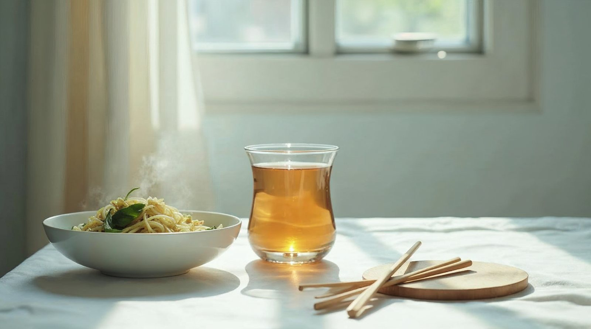

이종호 한의사 감수좋은꿈참사랑한의원 대표원장 (한의사 면허번호 19769)발행 2026-11-26 · 수정 2026-11-26
이 글의 차례
금요일 저녁, 이번 주도 버텼다는 안도감으로 집에 들어옵니다. 오랜만에 알람 없이 늦잠을 자고 일어난 토요일 아침, 그런데 머리가 묵직하게 조여 오고 어깨와 허리가 쑤십니다. 기다리던 주말인데 소파에 누워 하루를 보내고, 월요일이 되면 신기하게 몸이 다시 움직입니다.
진료실에서 이 이야기를 꺼내시는 분들은 대개 조금 억울한 얼굴을 하십니다. "쉬는 날만 아파요", "휴가만 가면 몸살이 나요"라고요. 일할 때는 괜찮다가 쉬려고만 하면 아프니, 몸이 나를 놀리는 것 같다고 말씀하시는 분도 계십니다.
이런 일은 생각보다 흔합니다. 평일에 쌓인 긴장이 풀리는 순간, 그리고 주말에 바뀌는 잠과 커피, 식사의 리듬이 함께 겹치면서 몸이 그동안 미뤄 둔 신호를 한꺼번에 보내는 경우가 많습니다.
저는 이 불편을 꾀병이나 기분 탓으로 넘기지 않습니다. 대신 평일과 주말에 무엇이 달라지는지를 하나씩 나란히 놓고 봅니다. 그 차이를 찾으면 주말을 조금 덜 아프게 보내는 길도 함께 보이기 시작합니다.
주말 두통·몸살은 어떤 모습인가요?
가장 흔한 모습은 토요일이나 휴일 아침에 머리가 묵직하게 조이거나 관자놀이가 지끈거리는 두통입니다. 여기에 목덜미와 어깨가 뻐근하고, 팔다리가 무겁고 쑤시며, 잠을 많이 잤는데도 기운이 없는 몸살 기운이 함께 옵니다.
편두통이 있는 분은 주말에 한쪽 머리가 욱신거리며 빛과 소리가 거슬리고 속이 메스꺼운 발작이 오기도 합니다. 평소 편두통이 있다면 주말이나 휴가 첫날이 잘 알려진 방아쇠 가운데 하나입니다.
이런 불편은 대개 감기처럼 열이 오르거나 목이 붓지 않습니다. 오후가 되며 조금 나아지거나, 일요일 저녁부터 가라앉아 월요일에는 멀쩡해지는 흐름이 흔합니다. 이 흐름 자체가 주말 리듬과 관련이 있다는 단서가 됩니다.
왜 하필 쉬는 날에 아플까요
첫 번째 이유는 긴장이 풀리는 순간입니다. 평일에는 긴장을 유지하게 하는 신호가 몸을 버티게 해 줍니다. 그 버팀이 풀리는 주말이 되면, 그동안 눌려 있던 피로와 통증이 한꺼번에 느껴지기 쉽습니다. 큰일을 끝내고 나서 몸살이 나는 것과 비슷합니다.
두 번째 이유는 잠의 변화입니다. 평일보다 두세 시간 늦게 일어나면 몸의 시계가 어긋나고, 너무 오래 누워 있는 것만으로도 머리가 무겁게 느껴질 수 있습니다. 반대로 금요일 밤 늦게까지 깨어 있다 보면 잠 자체가 짧아지기도 합니다.
세 번째 이유는 커피입니다. 평일 아침마다 커피를 드시던 분이 주말에 늦게 일어나 커피 시각이 몇 시간 밀리면, 그 사이 카페인이 빠지며 머리가 지끈거릴 수 있습니다. 주말 늦은 오전에 두통이 시작된다면 커피 시각을 먼저 떠올려 보세요.
네 번째 이유는 식사입니다. 늦잠 때문에 아침을 건너뛰고 늦은 점심을 드시면 공복 시간이 길어지고, 이것이 두통을 부르기도 합니다. 금요일 저녁 술자리나 야식이 더해지면 토요일 아침의 몸은 더 무거워집니다.
감기 몸살, 긴장성 두통과는 어떻게 다른가요?
감기 몸살이라면 대개 열이 오르거나 목이 따갑고 콧물, 기침이 함께 오며, 요일과 상관없이 며칠 이어집니다. 주말에만 반복되고 월요일이면 가라앉는다면 감기보다는 생활 리듬과의 관련을 먼저 살펴봅니다.
긴장성 두통은 머리를 띠로 조이는 듯한 느낌이 특징이고, 뒷목과 어깨가 굳은 날 심해집니다. 주말 두통도 이런 모습으로 오는 경우가 많지만, 평일 오후에 심해지는 일반적인 긴장성 두통과 달리 쉬는 날 아침에 시작된다는 점이 다릅니다.
약물과용 두통도 함께 살펴야 합니다. 평일에 두통약을 자주 드시다가 주말에 약을 거르면 두통이 오히려 심해지는 경우가 있습니다. 한 달에 두통약을 열흘 넘게 드신다면 이 가능성을 신경과에서 함께 확인해 보시길 권합니다.
몸살 기운은 왜 함께 올까요
주말 두통과 함께 온몸이 쑤시는 분이 많습니다. 평일 내내 같은 자세로 앉아 있거나 긴장한 채 지내면 목과 어깨, 허리 근육이 단단히 굳은 상태로 버팁니다. 긴장이 풀리면 그 굳은 자리들이 비로소 아프다고 말하기 시작합니다.
주말에 몰아서 하는 일도 몸살을 키웁니다. 평일에 못 한 청소와 빨래, 장보기, 아이와 놀아 주기, 오랜만의 운동을 하루에 몰아서 하면, 평일에 거의 쓰지 않던 근육이 갑자기 일을 하게 됩니다. 그 결과가 일요일의 몸살로 나타납니다.
반대로 하루 종일 누워만 있는 주말도 몸을 무겁게 합니다. 움직이지 않으면 굳은 근육이 풀릴 기회가 없고, 오래 누워 있던 자세 때문에 목과 허리가 더 뻐근해질 수 있습니다. 쉼은 가만히 있는 것보다 가볍게 움직이는 쪽이 몸에 맞는 경우가 많습니다.
몸이 주말에 보내는 신호를 어떻게 읽을까요?
주말 두통과 몸살은 평일의 생활이 몸에 얼마나 무리를 주고 있는지 보여 주는 거울이기도 합니다. 평일에 버티는 힘이 클수록 주말의 반동도 커지기 쉽습니다. 그래서 주말만 따로 고치려 하기보다 평일의 긴장을 함께 살펴야 합니다.
평일에 점심을 거르거나 책상 앞에서 급히 먹는 날이 많은지, 오후 내내 물 한 잔 마시지 않는 날이 많은지, 퇴근 뒤에도 업무 메신저를 놓지 못하는지 돌아봐 주세요. 이런 작은 습관이 쌓인 만큼 주말에 몸이 크게 흔들립니다.
마음의 긴장도 몸으로 나타납니다. 평일 내내 마감이나 사람 사이의 갈등으로 마음이 쫓겼다면, 그 긴장은 턱과 어깨, 뒷목에 고스란히 남습니다. 자기 전에 이를 꽉 물고 있지는 않은지, 어깨가 귀 쪽으로 올라가 있지는 않은지 한 번씩 확인해 보세요.
주말을 보내는 방법도 살펴봅니다
주말을 어떻게 보내느냐도 두통과 관련이 있습니다. 하루 종일 화면 앞에 앉아 영상을 보거나 게임을 하면, 눈과 목이 평일만큼, 때로는 평일보다 더 지칩니다. 쉬는 시간이 곧 몸이 쉬는 시간이 아닐 수 있습니다.
주말 오전에 햇빛을 쬐며 걷고, 오후에는 가볍게 몸을 늘이고, 저녁에는 화면을 조금 일찍 내려놓는 흐름을 권합니다. 거창한 계획이 아니라, 평일과 크게 다르지 않으면서 몸이 조금 더 편안한 하루를 만드는 것이 목표입니다.
먼저 이렇게 여쭙니다
처음 오시면 저는 대략 이런 순서로 여쭙니다. 미리 생각해 오시면 이야기가 수월해집니다.
- 두통이 주로 무슨 요일, 몇 시쯤 시작되나요?
- 머리 어느 쪽이, 조이는지 욱신거리는지 어떤 느낌인가요?
- 평일과 주말의 기상 시각은 얼마나 차이 나나요?
- 커피는 평일과 주말에 언제, 몇 잔 드시나요?
- 두통약은 한 달에 며칠쯤 드시나요?
- 주말에는 주로 쉬시나요, 밀린 일을 몰아서 하시나요?
이 질문들의 답을 나란히 놓으면, 주말 두통을 부르는 방아쇠가 하나둘 드러납니다. 대부분은 한 가지 이유보다 두세 가지가 함께 겹친 경우입니다.
일상에서 먼저 해 볼 수 있는 것
주말 두통을 줄이는 핵심은 평일과 주말의 차이를 줄이는 것입니다. 쉬는 날에도 몸이 크게 놀라지 않도록 리듬을 이어 주는 것이지요. 한꺼번에 다 바꾸기보다 하나씩 골라 보세요.
- 주말에도 평일 기상 시각에서 한 시간 이내로 일어나기
- 평일과 비슷한 시각에 커피 한 잔 마시기
- 늦게 일어나도 간단한 아침을 먼저 챙기기
- 금요일 밤 술과 야식은 평소보다 가볍게
- 밀린 집안일은 토요일과 일요일로 나누기
- 토요일 오전에 바깥 공기를 마시며 20분 걷기
늦잠이 꼭 필요할 만큼 피곤하다면, 늦게 일어나기보다 금요일 밤에 한 시간 일찍 잠자리에 드는 쪽을 권합니다. 같은 잠을 채우더라도 일어나는 시각이 지켜지면 몸의 시계가 덜 흔들립니다.
커피를 줄이고 싶은 분이라면 주말에 갑자기 끊기보다 평일과 주말 모두 조금씩 양을 줄여 가는 편이 두통이 덜합니다. 반 잔씩, 일주일 간격으로 줄여 보세요.
평일에도 긴장을 조금씩 풀어 주는 시간이 있으면 주말에 몰려오는 반동이 줄어듭니다. 점심 뒤 5분 목과 어깨 돌리기, 퇴근길 한 정거장 걷기처럼 작은 틈을 만들어 보세요. 주말 몸살은 평일 습관에서부터 준비되는 경우가 많습니다.
휴가 첫날, 명절 연휴에도 비슷합니다
주말 두통을 겪는 분들은 휴가 첫날이나 긴 연휴에도 비슷한 일을 겪는 경우가 많습니다. 큰 프로젝트나 시험이 끝난 직후에 몸살이 나는 것도 같은 흐름입니다. 몸이 긴장을 풀어도 된다는 신호를 받는 순간 쌓인 피로가 드러나는 것입니다.
그래서 휴가를 앞두고는 마지막 주에 일을 몰아치기보다 조금씩 속도를 늦춰 가는 것이 도움이 될 수 있습니다. 휴가 첫날은 무리한 일정을 잡기보다 평소 리듬을 지키며 천천히 몸을 풀어 주는 날로 비워 두세요.
여행지에서도 기상 시각과 첫 끼 시각을 평소와 비슷하게 맞추면 첫날의 두통이 한결 덜할 수 있습니다. 긴 이동으로 굳은 목과 허리는 도착한 뒤 숙소 주변을 가볍게 걸으며 천천히 풀어 주세요.

교대 근무나 육아 중이라면
주말이 따로 없는 교대 근무를 하시는 분은 쉬는 날이 들쭉날쭉해 같은 일을 더 자주 겪기도 합니다. 이런 분은 쉬는 날에도 잠드는 시각과 첫 끼 시각만큼은 근무 패턴별로 대략 정해 두면 몸이 덜 놀랍니다.
어린아이를 키우는 집은 주말이 오히려 평일보다 바쁩니다. 아이를 안고 업고 다니는 시간이 길어지며 어깨와 허리가 먼저 지칩니다. 가족과 시간을 나눠 한 사람씩 짧게라도 쉬는 시간을 만들고, 아이를 들 때는 무릎을 굽혀 몸 가까이 붙여 드는 습관을 들여 보세요.
한의원에서 함께 살필 수 있는 경우
- 주말이나 휴일마다 머리가 조이고 뒷목이 뻣뻣해지는 경우
- 쉬는 날만 되면 온몸이 쑤시고 기운이 없는 경우
- 평일 긴장이 심하고 어깨와 등이 늘 굳어 있는 경우
- 두통약을 자주 찾게 되어 줄이고 싶은 경우
- 주말 리듬이 흐트러지며 잠이 얕고 소화가 더딘 경우
좋은꿈참사랑한의원에 오시면 먼저 아래 '먼저 확인이 필요한' 신호가 없는지부터 봅니다. 그다음 맥을 짚고, 뒷목과 어깨, 등을 직접 만져 굳은 자리와 아픈 자리를 확인하며 잠과 소화, 손발 온도를 함께 여쭙니다.
진찰한 내용을 바탕으로 침, 약침, 추나, 물리치료 가운데 지금 상태에 맞는 관리와 생활에서 바꿔 볼 것 하나를 정합니다. 한약을 상의할 때는 드시는 약을 모두 확인하고 신중히 정합니다. 신경과나 내과에서 처방받은 약은 상의 없이 멈추지 않습니다.
이렇게 기록해 오시면 상담이 쉬워집니다
주말 두통은 평일과 주말을 나란히 놓고 보아야 이유가 보입니다. 2~3주 정도 간단히 적어 보세요.
- 요일별 잠든 시각과 깬 시각
- 커피를 마신 시각과 잔 수
- 아침 식사 여부와 첫 끼 시각
- 두통이 시작된 시각, 부위, 느낌
- 그날 한 일(밀린 집안일, 운동, 외출 등)
- 두통약을 드신 날과 효과
기록을 보면 "늦잠 잔 날", "커피가 늦어진 날", "아침을 거른 날"처럼 두통과 겹치는 조건이 드러나는 경우가 많습니다. 그 조건 하나를 먼저 바꿔 보는 것이 다음 주말의 숙제가 됩니다.
두통이 없었던 주말도 꼭 함께 적어 주세요. 아팠던 주말과 아프지 않았던 주말을 나란히 놓으면 무엇이 달랐는지가 훨씬 또렷하게 보입니다. 그 차이가 가장 쓸모 있는 단서입니다.
주말을 주말답게
쉬는 날 아프면 일주일이 통째로 손해 본 것 같은 기분이 듭니다. 몸이 나를 배신한 것이 아니라, 그동안 버텨 준 몸이 이제 좀 돌봐 달라고 말하는 것이라고 생각해 주시면 좋겠습니다.
이번 주말에는 한 가지만 해 보세요. 평소보다 한 시간 안에 일어나 커피 한 잔과 간단한 아침을 드시는 것입니다. 그 하나로 토요일 아침이 어떻게 달라지는지 적어 오시면, 다음 걸음을 함께 정하겠습니다.
이런 증상은 먼저 확인이 필요합니다
- 머리가 깨질 듯 갑자기 아프거나 말이 어눌해지고 팔다리에 힘이 빠지는 경우
- 높은 열과 함께 목이 뻣뻣해 고개를 숙이기 어렵거나 의식이 흐린 경우
이런 신호가 있으면 한의원보다 가까운 병원이나 응급실을 먼저 찾으세요.
함께 읽으면 좋은 글
- 평일 내내 긴장하다 주말만 되면 몸살처럼 아플 때는 어떻게 살피나요?
- 스트레스를 받으면 뒷목이 당기고 머리가 아픈 긴장성 두통은 어떻게 살피나요?
- 커피를 끊거나 줄였더니 머리가 지끈거리는 카페인 금단 두통은 왜 생기고 어떻게 넘기나요?
- 두통약을 자주 먹을수록 두통이 더 잦아지는 약물과용 두통은 어떻게 살피나요?
- 잠을 못 자면 두통이 올 때는 어떻게 살피나요?

여쭙는 것
- 두통이 주로 무슨 요일, 몇 시쯤 시작되나요?
- 머리 어느 쪽이, 조이는지 욱신거리는지 어떤 느낌인가요?
- 평일과 주말의 기상 시각은 얼마나 차이 나나요?
생활에서 해 볼 것
- 주말에도 평일 기상 시각에서 한 시간 이내로 일어나기
- 평일과 비슷한 시각에 커피 한 잔 마시기
- 늦게 일어나도 간단한 아침을 먼저 챙기기
한의원에서 함께 살필 것
- 주말이나 휴일마다 머리가 조이고 뒷목이 뻣뻣해지는 경우
- 쉬는 날만 되면 온몸이 쑤시고 기운이 없는 경우
- 평일 긴장이 심하고 어깨와 등이 늘 굳어 있는 경우
먼저 확인이 필요한 신호
- 머리가 깨질 듯 갑자기 아프거나 말이 어눌해지고 팔다리에 힘이 빠지는 경우
- 높은 열과 함께 목이 뻣뻣해 고개를 숙이기 어렵거나 의식이 흐린 경우
한눈에 보는 표
| 구분 | 핵심 |
|---|---|
| 여쭙는 것 | 두통이 주로 무슨 요일, 몇 시쯤 시작되나요? 머리 어느 쪽이, 조이는지 욱신거리는지 어떤 느낌인가요? |
| 생활에서 해 볼 것 | 주말에도 평일 기상 시각에서 한 시간 이내로 일어나기 평일과 비슷한 시각에 커피 한 잔 마시기 |
| 한의원에서 함께 살필 것 | 주말이나 휴일마다 머리가 조이고 뒷목이 뻣뻣해지는 경우 쉬는 날만 되면 온몸이 쑤시고 기운이 없는 경우 |
| 먼저 확인이 필요한 신호 | 머리가 깨질 듯 갑자기 아프거나 말이 어눌해지고 팔다리에 힘이 빠지는 경우 높은 열과 함께 목이 뻣뻣해 고개를 숙이기 어렵거나 의식이 흐린 경우 |
자주 묻는 질문
주말에 늦잠을 자면 안 되나요?
늦잠 자체가 나쁜 것은 아니지만, 평일보다 두세 시간씩 늦게 일어나면 몸의 시계가 흔들려 두통이 생기기 쉽습니다. 평일 기상 시각에서 한 시간 이내로 일어나고, 부족한 잠은 금요일 밤 일찍 자는 쪽으로 채워 보세요.
주말 두통 때문에 진통제를 먹어도 되나요?
가끔 드시는 것은 괜찮을 수 있지만, 한 달에 열흘 넘게 드신다면 약물과용 두통도 함께 살펴야 합니다. 드시는 날수를 적어 두셨다가 신경과나 한의원 진료 때 알려 주세요.
주말에만 아픈데 한의원에 와도 되나요?
네, 주말에 반복되는 두통과 몸살도 충분히 상담할 이유가 됩니다. 평일과 주말의 생활 기록을 가져오시면 어떤 조건이 겹치는지 함께 찾아보기가 훨씬 수월합니다.
주말에 운동을 몰아서 해도 괜찮을까요?
평소 거의 움직이지 않다가 주말에 강하게 몰아서 하면 몸살이 나기 쉽습니다. 평일에 짧게라도 나눠 움직이고, 주말 운동은 강도를 조금 낮춰 시작해 보세요.
좋은꿈참사랑한의원은 재진 때 지난번 이야기부터 이어서 여쭙니다. 진료시간과 예약은 오시는 길에서 확인하세요.
어디서 상담받을 수 있나요?
좋은꿈참사랑한의원은 서울 동작구 만양로2길 2 신성빌딩 3층·5층(서울 동작구 상도동, 7호선 상도역 3번 출구 근처)에 있습니다. 한의사 3명(이종호 대표원장, 조영기 수석진료원장, 정원영 진료원장)이 진료합니다. 진료시간은 평일 09:30~20:00(점심 13:00~14:00), 토·일·공휴일 09:30~15:00이며, 방문 전 전화로 확인을 권합니다. 예약은 네이버 예약, 카카오톡 상담, 전화 02-815-7510로 받습니다.
이 글은 일반적인 건강 정보이며 개인의 진단이나 치료를 대신하지 않습니다. 증상이 있거나 복용 중인 약이 있다면 진료를 통해 확인하세요. 치료 효과는 개인마다 다를 수 있습니다.
작성 기준: 일반적으로 알려져 있는 건강 정보를 참고해 정리했습니다(대표원장 감수). 증상 기록은 1~2주 동안 하루 1회, 비슷한 시간에 적어 오시면 지난 상태와 비교하기 쉽습니다.